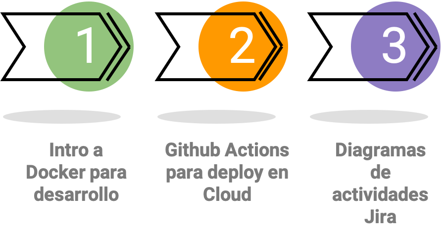

Unidad 9: Herramientas para desarrollo y gestión de proyectos de software#
Contenido de la unidad#
Introducción a Docker#
Docker es una plataforma de código abierto que permite a los desarrolladores y a los administradores de sistemas construir, enviar y ejecutar aplicaciones en contenedores. Estos contenedores son unidades estándar de software que empaquetan el código y todas sus dependencias para que la aplicación se ejecute de manera rápida y confiable desde un entorno a otro.
¿Qué es la vitualización?#

La virtualización se refiere a la creación de versiones virtuales de recursos físicos, como servidores, dispositivos de almacenamiento, redes e incluso sistemas operativos. En lugar de interactuar con el hardware físico directamente, los sistemas y aplicaciones interactúan con representaciones virtuales de ese hardware. Esta abstracción permite una mayor flexibilidad, eficiencia y consolidación de recursos.
Deventajas de las máquinas virtuales#
Peso: El el orden de los GB. Repiten archivos en común. Inicio lento.
Costo de la administración: Necesita mantenimiento igual que otra computadora.
Múltiples formatos: VDI, VMDK, VHD, raw, etc.
¿Qué es un contenedor?#
Un contenedor es una unidad estándar de software que empaqueta el código y todas sus dependencias para que la aplicación se ejecute de manera rápida y confiable desde un entorno de desarrollo a un entorno de producción.

Ventajas de los contenedores#
Flexibles: No importa el tipo de aplicación que decidas meter en un contenedor, siempre funcionará igual.
Ligeros: Los contenedores comparten el mismo kernel del sistema operativo y solo ejecutan los procesos que necesitan, por lo que son mucho más ligeros que las máquinas virtuales.
Portables: Puedes construir localmente, desplegar en la nube y ejecutar en cualquier lugar.
Escalables: Puedes aumentar y distribuir automáticamente réplicas de contenedores en función de la demanda.
Seguros: Los contenedores aplican aislamiento de recursos y restricciones de acceso, al tiempo que aprovechan el kernel del host subyacente.
Bajo acoplamiento: Los contenedores están altamente acoplados con el código y las dependencias que contienen, pero están débilmente acoplados con otros contenedores y la infraestructura subyacente.
Contenedores vs máquinas virtuales(VM’s)#
A diferencia de las máquinas virtuales, que virtualizan todo el sistema operativo y el hardware subyacente, los contenedores virtualizan el sistema operativo, compartiendo el mismo núcleo del sistema operativo, pero funcionando en espacios de usuario separados.

Docker#
Docker es una de las plataformas de contenedores más populares y ha jugado un papel fundamental en la popularización de la tecnología de contenedores.
Instalación de Docker#
Comandos básicos de Docker#
docker version: Muestra la versión de docker.
docker info: Muestra información del sistema.
docker build: Construye una imagen.
docker run: Ejecuta un contenedor.
docker inspect: Muestra información detallada de un contenedor.
docker prune: Elimina contenedores, imágenes, volúmenes y redes no utilizados.
docker ps: Lista los contenedores que se están ejecutando.
docker ps -a: Lista todos los contenedores.
docker stop: Detiene un contenedor.
docker rm: Elimina un contenedor.
Vamos a creaer el contenedor de la aplicación de backend.#
Asegurate de tener instalado Git.#
Crear el archivo Dockerfile#
# Usa una imagen base de Python
FROM python:3.10-slim-buster
# Copia los archivos de tu proyecto al contenedor
COPY . /app
# Cambia al directorio de la aplicación
WORKDIR /app
# Instala las dependencias
RUN pip install --no-cache-dir -r requirements.txt
# Expone el puerto que utilizará FastAPI
EXPOSE 8000
# Comando para ejecutar la aplicación
CMD ["uvicorn", "main:app", "--host", "0.0.0.0", "--port", "8000"]
Crear el archivo .dockerignore#
__pycache__/
.dockerignore
Dockerfile
*.pyc
*.pyo
*.pyd
.Python
db.sqlite3
*.git
*.so
*.DS_Store
Construir la imagen del contenedor#
docker build -t backend .
Ejecutar el contenedor#
docker run -d --name backend -p <local_PORT>:<container_PORT> backend
docker run -d --name backend -p 8000:8000 backend
Verificar que el contenedor se está ejecutando#
docker ps
Vamos a subir a github el cambio de los archivos Dockerfile y .dockerignore#
git add .
git commit -am "Dockerfile and .dockerignore added"
git push
Ahora vamos a realizar el despliegue de nuestra aplicación apoyados del contenedor en un servidor.